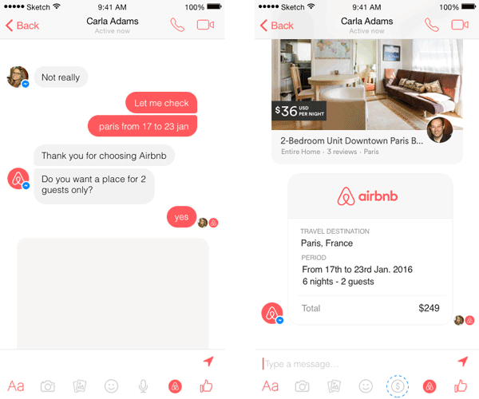
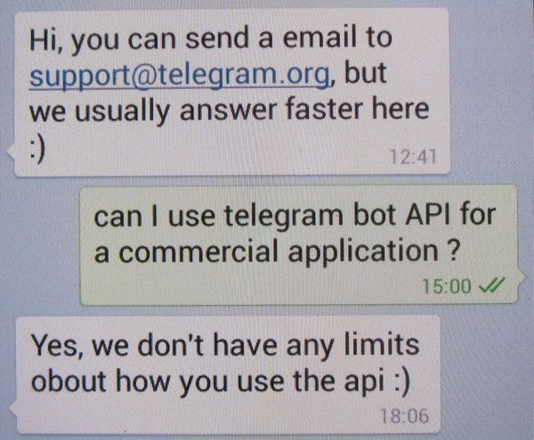
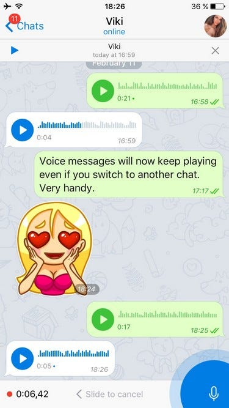
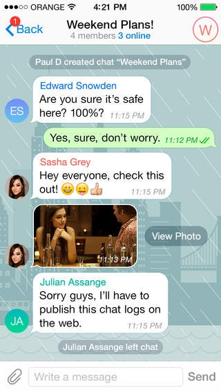
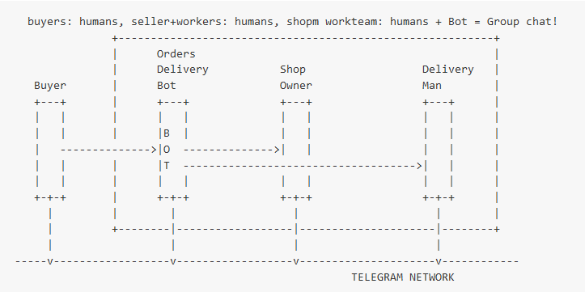
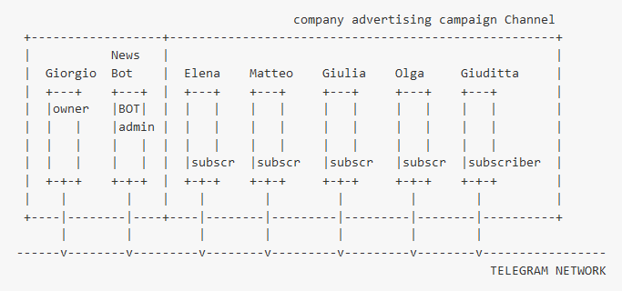
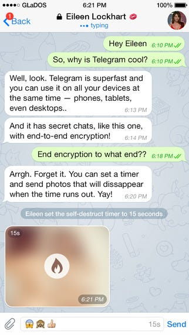

La “diversità” di Telegram
Aggiorno qui mio articolo già pubblicato il 5 Dicembre 2015 con titolo Telegram vs Whatsapp ?, che ripropongo aggiungendo qualche novità.
Faccio riferimento ad uno dei tanti articoli che qualche tempo addietro paragonava Telegram a Whatsapp: Ecco i 5 motivi per cui Telegram è meglio di WhatsApp. L’articolo di Nadia Napolitano è un riassunto divulgativo e sono certamente d’accordo con i 5 motivi per cui, dal punto di vista dell’utilizzatore finale, Telegram “è meglio” di WhatsApp.
Qui di seguito rielenco i punti, facendo alcune aggiunte/precisazioni e nei paragrafi successivi aggiungo mie riflessioni generali, tecniche, etiche e sociali.
Partiamo dai 5 punti:
- Aggiunta contatti
- Multipiattaforma Pongo l’accento sulla sincronizzazione tra i devices: tutti i client dell’utente (applicazioni native su personal computer, o dispositivo mobile, o interfaccia browser ) sono istantaneamente sincronizzate!
- Condivisioni a 360°
- Si dice nell’articolo:
WhatsApp ha un limite di appena 16 MB, Telegram di 1,5 GB: questo significa che potrete condividere di tutto con i vostri contatti, anche un film volendo.
- Vero. Già solo questa caratteristica è di per sè di enormi ripercussioni su possibili servizi di scambio files e contenuti multimediali, che assume maggior interesse (sello scambio di contenuti P2P) rispetto a possibili servizi realizzati dalle features Telegram: chatbot e canali (vedi dopo).
- Sicurezza
- Servizio gratuito
OK, ma ci sono molti altri punti di cui non si parla granchè e che pongono il sistema Telegram al di sopra di altri sistemi di instant messaging, quantomeno nella visione a lungo termine. Nei prossimi paragrafi spiego le ragioni.
Telegram Bot REVOLUTION!
La possibilità di integrare servizi realizzati con applicazioni terze parti di back-end di tipo chat bot (in gergo: bot). vedi introduzione ufficiale.
I Bot, realizzati da “terze parti”, cioè da chiunque, (e la loro integrazione a gruppi e canali, spiegata qui di seguito) sono la vera rivoluzione attuata da Telegram, attualmente utilizzata in modo infantile (/commands) ma che presto diventeranno conversational apps.
E Tiscali Indoona Open Platform ?
Non esiste al momento (Febbraio 2016) qualcosa di simile ai bots negli altri sistemi di instant messaging chat “P2P”, ad eccezione della Italiana Tiscali, che ha nel 2015 ha fornito una interfaccia per gli sviluppatori di bots: la Indoona Open Platform, riprendendo alcuni concept partoriti forse precedentemente da Telegram (credo io, ma il concetto di bot non è certo stato inventato da Telegram, quindi non è importante “chi è arrivato prima?”).
E Slack (EmployeeExperience e team-working) ?
Non posso non citare slack.com, che propone una applicazione di teamwork chatbots molto trendy in ambito aziendale. Slack comprende nativamente un chatbot (slackbot) e una integrazione a servizi terze parti con API curate estremamente bene e che sta godendo di un vasto ecosistema di terze parti che sviluppano bots di ogni genere e sorta (nell’ambito di servizi interaziendali).
C’è un problema però con Slack: il sistema è a pagamento e l’utilizzo di un sistema id messagistica in cui l’azienda effettua store di tutte le conversazioni nno eccita positivamente noi hackers, protettori di uno straccio di privacy (rumors annunciano versione Pro per cui Slack permetterà ad azienda di gestirsi il database delle conversazioni tra dipendenti).
E Facebook Messenger & Whatsapp ? Google Chat ?
Negli ultimi mesi ci sono rumors a riguardo della possibile implementazione di #AI bots in misteriosa applicazione di messaggistica Google Chat di immanente rilascio, e Facebook Messenger pare abbia rilasciato ad alcuni partners “beta-tester” l’SDK (System Developement Kit) per l’integrazione di applicazioni terze parti (i bots appunto, che Facebook chiama threads, se non sbaglio), ma non è chiaro se e quando l’integrazione verrà aperta a qaulunque terza parte (oppure rimarrà ristretta ad aziende scelte da facebook) e quale sarà il business model con le terze parti.

Ma WeChat spopola in Cina!
Ed è vero: WeChat, piattaforma made in Cina di instant messaging, ha qualcosa di simile ai Telegram bot (che vengono chiamati in wechat official accounts ed in verità sono web-microsite embedded nella applicazione),
ma WeChat ha modello di profitto azienda-centrico (WeChat fa accordi con grandi aziende terze parti che forniscono funzionalità corollarie, vedi sistemi di payment) mentre Telegram, ha creato una infrastuttura di networking internet performante, sicura e soprattutto libera da accordi B2B con grandi aziende partner (perlomeno negli intenti pubblicamente espressi fin’ora).
Telegram offre Bot API semplici per servizi qualsiasi, fatti da chiunque: è il concetto di LIBERTA’ che è vincente, in Telegram!
La diversità di Telegram è il fatto di fornire strumenti di piattaforma che abilitano servizi (Pavel Durov le chiama utilities) fatti da terze parti indipendenti e scorrelati dall’azienda. Non ci sono copyright o soluzioni app proprietarie di Telegram, non ci sono servizi generalisti (calcio, porno, meteo, vattelapesca) gestiti direttamente (top-down) da Telegram. E’ questo secondo me il punto di forza vincente:
lasciare alla gente la libertà di trovare i servizi/applicazioni, le famose “killer applications”, e NON imporle con servizi proprietari profit.
L’errore che invece hanno fatto fin’ora, quasi sempre, gli operatori Telco mobile di mezzo mondo, è stato quello di visione: l’accentramento di ogni profitto all’azienda privata (il modello net-harchical per dirla alla Michael Bauwens).
Per esempio, ho lavorato nella fase di start-up, e ne sono orgoglioso, nel mobile network operator Italiano, la 3, bellissima esperienza lavorativa di “startup”, che purtroppo non ha poi rivoluzionato il mondo con i servizi applicativi basati sull’UMTS (vedi videochiamata, videomessaggi per applicazioni “generaliste” come i videogoal, la messagistica di incontri, etc.), così come avevamo ipotizzato allora (il lancio commerciale fu nel 2003).
Con Telegram, disrupting services emergeranno invece in modo bottom-up. “Emergenza cognitiva”...
Telegram Bot Payment API ?
Di Bot presto si parlerà molto, se e quando verranno rilasciate le Telegram Payment Bot API. Le API di pagamento sono state annunciate in Settembre 2015 da parte di Pavel Durov, fondatore di Telegram, intervistato durante evento TechCrunch. Consiglio al lettore di ascoltare attentamente le affermazioni di Pavel Durov nella intervista disponibile in questo video:
Quindi Telegram proporrà la possibilità di fare pagamenti via chat, terreno in cui i big player (Paypal, Apple, Google, Amazon) si combattono da anni ormai. E va detto che i pagamenti mobile sono la grande sfida dei prossimi anni, più che tutto il nostro parlare sulla criptazione.
La criptazione dei messaggi è il presupposto tecnico per una piattaforma solida di pagamento, ed anche una questione di “privacy” dell’utente, ma non sono nemmeno convinto che qualsiasi sistema di pagamento debba essere basato su invincibili meccanismi di crittografia della comunicazione, per esempio in contesti di ecommerce di prossimità, vedi mio progetto draft basato semplicemente sul tracciamento del cash, ma qui il discorso, tra concetto di privacy, segretezza, ficalità ed evasione fiscale, economia locale e di prossimità, mi porta off-topic e mi fermo.
Telegram è davvero totalmente gratuito ?
Ad oggi è così, ma un domani alcune features, per esempio commisssioni su possibili servizi di pagamento, potrebbero non esserlo gratuite, ma ci stà. Oppure potrebbe essere fatta pagare banda nel caso di canali o bots che inviano elevato traffico (attualmente un bot non pò inviare più di 30 messaggi al secondo).
A lungo termine, nell’eventualità di diffusione mondiale del networking, le donazioni personali od un crowdfounding agli utenti non sosterranno i costi dell’infrastruttura. O forse mi sbaglio; Pavel Durov ha più volte affermato la sua volontà di gratuità delle funzionalità base di Telegram, cioè quelle ad oggi disponibili. Lui sostiene che ha un suo budget personale tale per cui non sono nemmeno necessarie campagne di crowdfunding e/o di donazione.
Applicazioni commerciali indipendenti ?
Al momento i Telegram bot non hanno nessuna limitazione d’uso e permettono di realizzare app anche con spefiche esigenze commerciali / profit. Ho personalmente chiesto e verificato i Terms Of Services (TOS) a riguardo e la risposta (rigorosamente via chat :) di Telegram, che ho pubblicato su home page del mio twitter microblog, dice testualmente:
“We don’t have any limits about how you use the API”
Screenshot del mio telefono, che riporta conversazione con Telegram bot support:

Messagistica transazionale ?
Con i Telegram bots è possibile realizzare messagistica istantanea transazionale: messaggi che arrivano all’utente in tempo reale ed hanno handshake da utente in tempo reale (“ricevuta di ritorno digitale”).
In tal senso specifiche applicazioni di messaggistica, abilitate dai bots, possono sostituire gli SMS e le mail. D’altro canto, il mercato della messagistica transazionale su mobile/IP è sempre in fermento. Qualche mio tweet sui sistemi “push”.
E Catapush ?
Non posso non citare l’azienda Italiana Catapush! Eccellente impostazione del problema (tecnico). Catapush si rivolge in particolare come service provider a terze parti di tipo aziende, grandi aziende (B2B/B2C). Probabilmente è un modello di business che hanno studiato bene, ma io devo ragionarci ancora sulla fattività e pervasività. Comuqnue benvengano start-up Italiane come questa, che fa seguito alla gran bella piattaforma Skebby di gestione SMS.
Respect.
Applicazioni di Messagistica Conversazionale ?
Bots di generazione I
Gli odierni chatbos, che chiamo di generazione I, sono poco più che giochini, d’accordo. Al momento non si vedono applicazioni davvero smart con i bots. Al di là di bots utilizzati per le solite applicazioni mainstream, il calcio, il porno, certo social-networking giocoso ma futilino, con stickers ed iconcine, la maggior parte dei bots che si vedono ora rispondono comuqnue a semplici comandi dell’utente; spesso non hanno quasi mai gestione della sessione (nel senso di gestione del contesto conversazionale e storage del profiling utente), soprattutto non mi pare ci siano sistemi di apprendimento incrementale dei gusti, scelte, azioni tipiche, incomma: conoscenza dell’utente.
Cookies for Chatbots ? Smart user personalization with some AI learning of user habits & flavors !
Bots di generazione II
Non c’è ancora l’attenzione a servizi con cui interfacciarsi con linguaggio davvero naturale, ma arriveranno presto. Molte grandissime aziende (Google, Facebook, Apple, Microsoft, IBM, etc.) stanno lavorando all’integrazione di sistemi di intelligenza artificiale in grado di dialogare in linguaggio naturale. Si tratta di software definiti artificial assistant, virtual agent, o smart chatbots.
La chiamerei bots della generazione II, e comunque li si voglia chiamare, si tratta di software con i quali chattare, come se fossero persone, per eseguire i compiti pià svariati, tra i quali senz’altro quelli commerciali; Chris Messina (Uber) ha scritto un articolo un mese fà che è considerato il manifesto: 2016 will be the year of conversational commerce:
Io sono dell’idea, che vorremo usare in futuro sempre di più servizi con interfaccia text e/o voice based, con Telegram o altro instant messenger, e che in un passo ancor più avanti, si arriverà ad interfaccie vocali in tempo reale.
E qui allora sì, tornerà in ballo il VOIP, ovvero poter fare chiamate voce e video con bots; ma non è un caso che Pavel Durov abbia volutamente messo a priorità bassa la possibilità di fare chiamate/videochiamate. Un problema tecnologico ? Non credo. Problema devops di risorse di macchine sulle countries ? Può darsi.
Ma a mio avviso c’è una ben chiara visione strategica/business di come muoversi: PRIMA fare bene l’instant messaging su text chat, e POI, affrontare la big issue del VOIP.
Nel frattempo, in questi giorni è stata migliorata l’interfaccia dei messaggi vocali, quindi Telegram pare evitare l’approccio di integrare chiamate audio e video ma insiste sulla centralità della messaggistica, di testo e voce.

Telegram Grups & SuperGroups
In Novembre 2015 Telegram rilascia la funzionalità Supergruppo che permette di estendere un normale gruppo personale fino al numero di 1000 utenti collegati al gruppo. Utilizzi seri di questa funzionalità ? Si pensi all’ambito lavorativo aziendale (comunicazione tra tutti i dipendenti, ma qui la soluzione multicanale di #slack è a crescente diffusione), oppure si pensi a contesti di e-learning per la condivisione di contenuti in ambito scolastico (prenotazione esami, esami on-line! esercitazioni, etc. etc. ); ci sono innumerevoli possibili servizi innovativi possibili!

Telegram Channels
I canali sono la possibilità di inviare messaggi unidirezionali uno-a-molti ad un numero teoricamente illimitato di utenti (questa funzionalità fu chiamata inizialmente broadcast e poi rinominata channel).
Attenzione: i canali non sono gruppi: i sottoscrittori di un canale non possono rispondere al mittente del messaggio. Ma ci sono rumors sul fatto che una delle imminenti release (Febbraio/Marzo 2016 ?) permetterà, ai sottoscrittori di un canale, di commentare i post (notizia da fonti non ufficiali).
I canali sono soluzione per l’advertising aziendale ?
Non credo. Sono perplesso sull’uso di tipo advertising/pubblicità dei canali, anzi, credo sia un errore, per le aziende, fare pubblicità “virale” a costo zero, utilizzando i canali Telegram. Lascio agli esperti di marketing web ed aziendale, valutare il perchè i canali Telegram non vanno usati per spammare pubblicità generalista.
I canali come alerting per emergenze pubbliche ?
Non proprio. Sono critico rispetto ad alcune iniziative di alcuni digitalchampions Italia che hanno proposto l’utilizzo dei canali per segnalazione di allerta meteo/protezione civile. Molti giornalisti ed intellettuali hanno fatto notare l’inconsistenza (per lo meno l’incompletezza) di queste proposte, e non è mio interesse mettere alla berlina questo o quello, anche se personalmente fono molto critico su certa retorica digitalchampion in Italia. Non ci vuole molto a capire perchè non vada bene, per esempio, un servizio di allerta emergenza/calamità basato (SOLO) su comunicazione IP. Digital divide vs open services? :( Su internet si trovano molti articoli e riflessioni a riguardo della diatriba (più di bassa politica e di vicende provinciali italiche, invero, no more comments).
Un esempio d’eccellenza di utilizzo ludico di un canale ?
Il canale vecchiasignoracom (“Notizie esclusive e in tempo reale sulla Juventus dalla community bianconera più grande e importante del mondo”) è un eccellente esempio di utilizzo giornalistico del mezzo: ottimo il mix multimediale di contenuti fotografici, di notizie testuali, video ed audio!
Integrazione i Bots dentro Canali e Gruppi
E’ possibile inserire bots all’interno di gruppi di umani come amministratori di canali. Questo significa la possibilità di servizi innovativi dove alcuni compiti sono svolti da software bots che “mediano” parlando con gli umani in linguaggio naturale, rispondendo a domande degli utenti attraverso gli online bots (dettaglio dopo).
Questa feature, sebbene presente da alcuni mesi, non mi pare sia ancora usata con successo, eppure questa è una chiave di volta (generazione III):
I Telegram bots dentro canali/gruppi realizzano servizi al pubblico realizzati congiuntamente da bots (“intelligenti”) ed umani!
Qui sotto esempio di gruppo per applicazione e-commerce (lato merchant); l’acquirente acquista su chat (online) da un negozio fisico (in-store), ordinando con colloquio con un bot, che comunica ordine in negozio ed a fattorino per eventuale consegna a domicilio:

Oppure, si pensi ad esempio ad un canale telegram che trasmette news di un qualche tipo, che sò, riprendendo l’esempio sopra, notizie relative ad una squadra di calcio. Potrebbe essere che alcune notizie sono inserite sul canale da giornalisti in carne ed ossa (quelli del canale #vecchiasignoracom fanno un lavoro eccellente di giornalismo multimediale), ma a fianco del lavoro umano, potrebbe essere che alcune notizie potrebbero essere inserite, invece che “a mano”, da uno (o più!) bot che per esempio vanno a fare scraping di news sul web epropongono una selezione (magari scelta da coordinatori umani).
Proprio oggi l’amministratore del canale @vecchiasignoracom, Michel le Roi, mi conferma che viene utilizzato, all’interno del canale, un bot che pubblica le prime pagine.
Nel caso di un canale dedicato ad una squadra di calcio, inline bots ( vedi mio articoletto: About Telegram Bot API Inline mode ) potrebbero rispondere a richieste specifiche degli utenti, per esempio: che goal ha fatto oggi il tal giocatore ? qual’è la classifica della squadra ? etc.
Tempo addietro avevo schematizzato alcune idee sulla possibilità di servizi via chat svolti da bots, in ambito aziendale, profit/no profit, ecommerce, healthcare, payments, helpdesk, delivery&tracking, etc. :

Altri esempi applicativi qui:
Sull’etica (privacy e “users’ control”)
Pavel Durov ha più volte dichiarato i suoi intenti di mantenere la criptazione dei dati, argomentando, con tesi che potrebbero piacere ai liberisti “cyberpunk” (statunitensi) degli anni ‘70 & ’80 (?!). Sono piuttosto d’accordo e mi piace anche il compromesso etico che ha attuato in relazione alla attuale polemica (estremamente strumentale) da parte di chi dice che i sistemi criptati (con chiaro riferimento a Telegram), sono usati dai terroristi (islamici). Io penso che si tratti di un attacco strumentale a Telegram, forse promosso da aziende “concorrenti”, ma invece Telegram ha fatto chiudere, nelle ultime settimane, centinaia di canali di apologia terroristica.
Invece, Whatsapp, da Dicembre 2015, ha inibito la possibilità di cliccare il link a http://telegram.me nelle chat di alcuni paesi (non ho idea per l’Italia… io whatsapp l’ho rimosso dal mio telefono). Ma questo fatto, cioè avere “bannato” il contenuto dei messaggi degli utenti (per uno scopo di paura di una migrazione di massa degli utemti a Telegram), è una cosa molto grave, in generale, dal punto di vista etico (e della privacy…), da parte di Whatsapp/Facebook. O no ? Lascio al lettore il ragionare su possibili consegenze di sistemi che censurano i contenuti testuali o quant’altro. Vi par bello ?

Approfondimenti
[1] Cosa sono i chatbot ? https://en.wikipedia.org/wiki/Chatterbot
[2] Cosa sono i telegram bot ? https://telegram.org/blog/bot-revolution
[3] Qualche mia idea su architetture e servizi con telegram. draft doc: Telegram Bots Man-Machine Services:
[4] Telegram webhooks server, mio progetto open source in linguaggio Ruby: BOTServer
[5] Mio articolo su inline bots: About Telegram Bot API Inline mode
[6] Progetto open source DRAFT per utilizzare Telegram chatbot in customer center, con operatori umani e/o bots: Conversator
About me
blog: www.twitter.com/solyarisoftware
mail: giorgio.robino@gmail.com
Originally published on Medium.